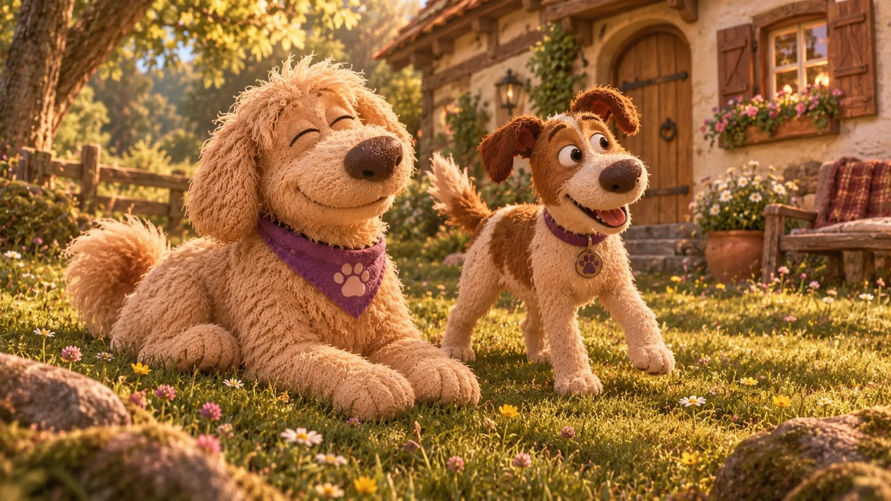
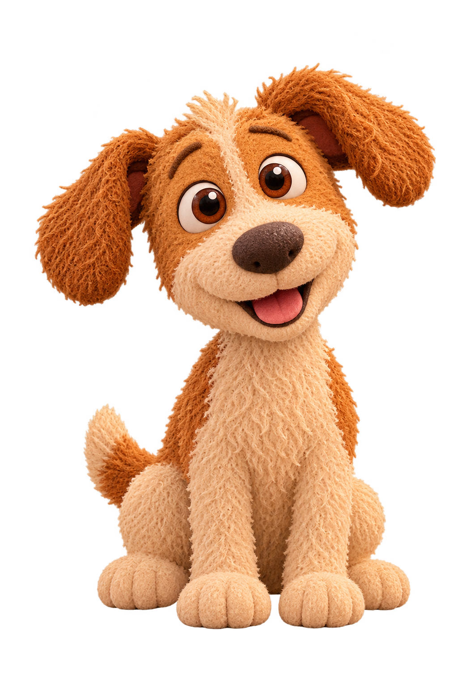
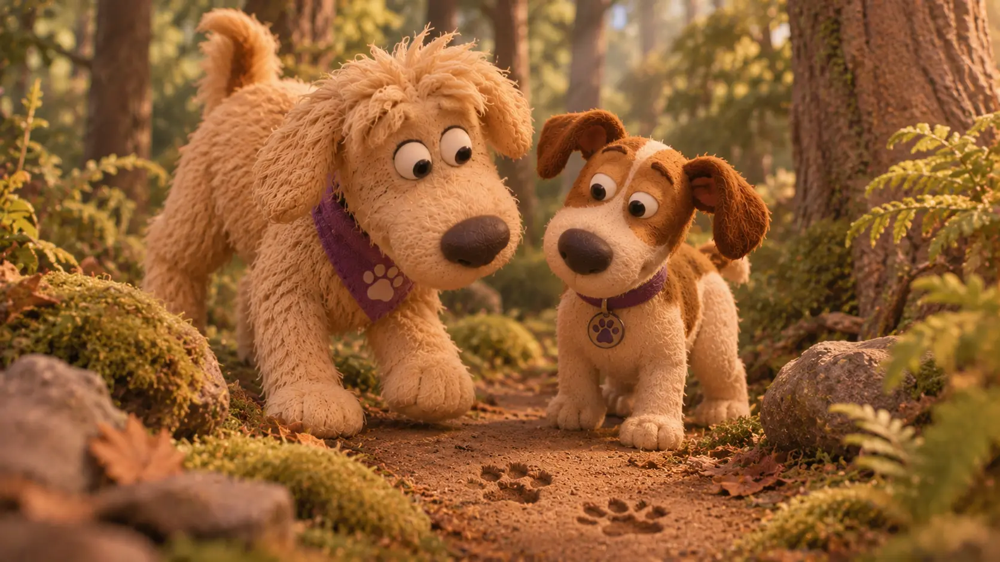
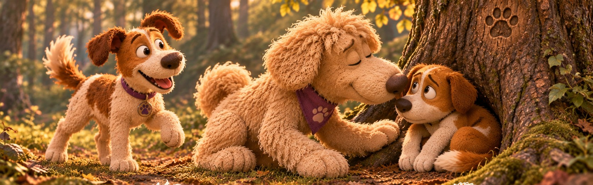
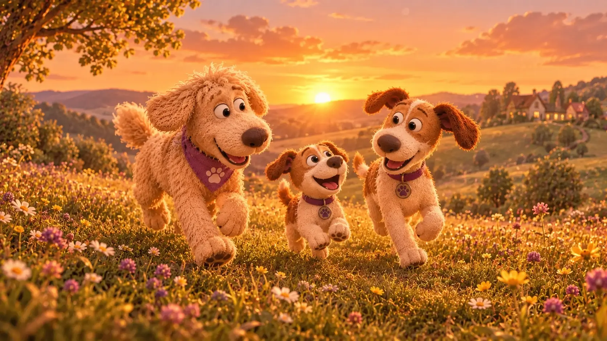

Eine Geschichte über Freundschaft
Zwei Freunde.
Ein großes Abenteuer.
Der eine liebt gemütliche Spaziergänge, der andere kann kaum stillsitzen. Puschel und Pfote könnten unterschiedlicher nicht sein. Doch wenn es darauf ankommt, halten die beiden zusammen – denn beste Freunde gehen gemeinsam durch dick und dünn.
Kapitel 1 · Ein ungleiches Duo
Zwei Hunde, zwei Welten
Puschel hat es am liebsten gemütlich. Als älterer Hund weiß er genau, was ihm gefällt: sein kuscheliges Sofa, ein gemütlicher Spaziergang und danach ein ausgiebiges Nickerchen. Aufregung? Die kann ruhig woanders stattfinden.
Doch dann gibt es Pfote. Jung, flink und voller Entdeckerlust. Er ist immer in Bewegung, steckt seine Nase in jede Ecke und hat ständig neue Ideen im Kopf. Still sitzen? Für Pfote ein Fremdwort!
Obwohl die beiden so verschieden sind, sind sie beste Freunde. Und manchmal ist genau das die schönste Kombination.


Kapitel 2 · Ein unerwarteter Zwischenfall
Wo ist der kleine Welpe?
Eines Morgens liegt plötzlich Aufregung in der Luft. Ein kleiner Welpe aus der Nachbarschaft ist verschwunden! Seine Familie sucht überall nach ihm und macht sich große Sorgen.
Für Pfote ist sofort klar: Da muss geholfen werden! Ohne lange nachzudenken, möchte er sich auf die Suche machen. Puschel ist von der Idee zunächst weniger begeistert. Schließlich war heute eigentlich ein gemütlicher Tag geplant.
Aber seinen besten Freund lässt Puschel natürlich nicht allein. Also heißt es: Pfoten hoch und los! Gemeinsam machen sich die beiden auf den Weg.
Kapitel 3 · Eine geheimnisvolle Spur
Eine Spur im Wald
Puschel und Pfote folgen den kleinen Pfotenabdrücken, die sie am Wegesrand entdecken. Sie führen immer tiefer in den geheimnisvollen Wald.
Pfote ist ganz aufgeregt und möchte sofort weiterlaufen. Puschel dagegen bleibt ruhig und schaut sich aufmerksam um. Gemeinsam entdecken sie schließlich ein kleines Stück vom Lieblingsspielzeug des Welpen.
Jetzt wissen die beiden: Sie sind auf der richtigen Spur!


Kapitel 4 · Zusammen sind wir stark
Endlich gefunden!
Hinter einem großen Baum hören die beiden plötzlich ein leises Winseln. Dort sitzt der kleine Welpe, ganz allein und ein wenig ängstlich.
Pfote läuft begeistert zu ihm. Puschel nähert sich vorsichtig und schenkt dem Kleinen Sicherheit. Gemeinsam schaffen sie es, ihn zu beruhigen.
Jetzt müssen sie nur noch gemeinsam den Weg zurückfinden.
Kapitel 5 · Ein Happy End mit Pfoten
Freunde fürs Leben
Gemeinsam machen sich Puschel, Pfote und der kleine Welpe auf den Weg zurück. Als sie endlich wieder bei seiner Familie ankommen, ist die Freude riesig.
Der kleine Welpe wird liebevoll begrüßt und auch Puschel und Pfote werden gefeiert. Was als aufregende Suche begonnen hat, endet mit einer ganz besonderen Freundschaft.
Puschel und Pfote wissen jetzt: Egal wie unterschiedlich man ist – zusammen kann man alles schaffen!

Mehr als nur ein Abenteuer
Zusammen ist man weniger allein
Auf ihrer Reise merken Puschel und Pfote, dass jeder etwas Besonderes kann. Pfotes Mut und Puschels Erfahrung ergänzen sich perfekt. Was keiner von beiden allein geschafft hätte, gelingt ihnen gemeinsam.
Und als sie den kleinen Welpen endlich finden, wartet nicht nur ein glückliches Wiedersehen auf sie. Die beiden entdecken auch, dass Freundschaft manchmal genau dort beginnt, wo man am wenigsten damit rechnet.
Ein Film für die ganze Familie
Pfoten hoch für die Freundschaft!
Lust auf ein Abenteuer voller Herz, Humor und Überraschungen? Dann begleite Puschel und Pfote auf der großen Leinwand!
Jetzt Tickets sichern